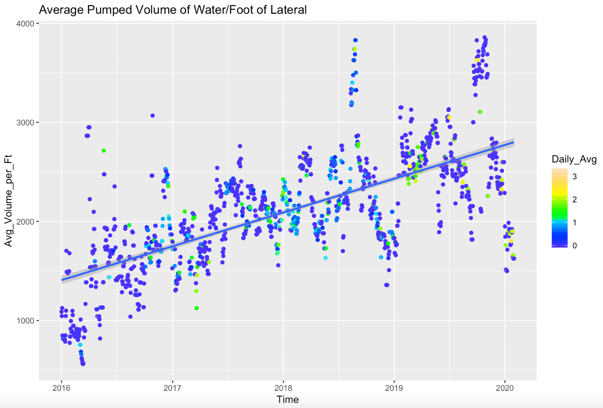
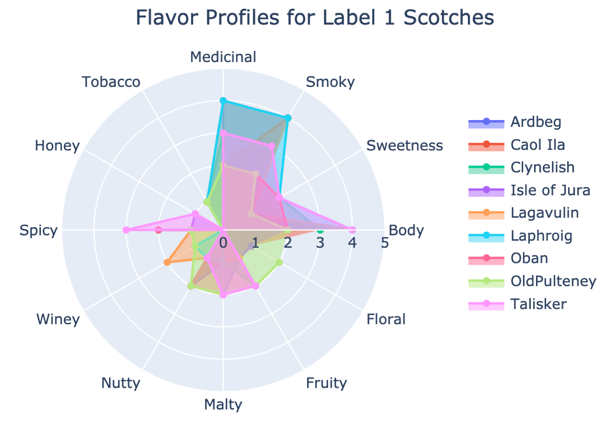

I am a forward-thinking Data Scientist who uses creativity, emotional intelligence, innovation, and efficiency to tell stories with data. My background as an Earth Scientist and PMP-Certified Project Manager allows me to deliver value through efficient processes, enthusiastic stakeholder engagement, and resourceful expertise. I love applying the scientific process to solve real-world problems and have a positive impact on the team or organization along the way. You can read more about me and my experience in my resume.
Predicting Induced Seismicity in the Eagle Ford Shale Play

Classifying Lung Infection in COVID-19 Patients
Reddit Post Classification Using NLP
Scotch Recommender Passion Project

Experience
Data Science Immersive Student
General Assembly
November 2020 - March 2021
13-week immersive course applying data collection, cleaning, exploratory analysis, modelling, data visualization, and various machine learning tools to solve real-world data science problems. Created a Naïve Bayes and Random Forest Classifier to discern between 10,000+ Reddit posts using Natural Language Processing techniques. Trained a Convolutional Neural Network to assist in diagnosing COVID-19 pneumonia presentation in chest x-rays. Capstone project utilized forecasting methods to better understand mechanism driving induced earthquakes in the Eagle Ford Shale Oil and Gas Play.
March 2013 - Present
Eagle Ford Shale Asset Geophysicist
BP/BPX Energy
March 2019 - October 2020
Asset geoscientist responsible for providing data-driven insight to reduce well deliverability risk for a 4-6 rig drilling program. Advised multi-disciplinary team of geologists and engineers on the benefits and appropriate uses of 2D/3D seismic datasets for optimizing hydrocarbon production. Facilitated completion and organization of newly acquired 3D seismic data worth ~$18million. Assisted Asset VP in Process Improvement efforts for Eagle Ford BU to optimize team efficiency and Capital Planning Process, reducing software touch points and man-hours.
Project Coordinator
ESG/Spectraseis
February 2017 - March 2019
Project Coordinator/Manager responsible for delivering 30+ awarded Passive/Induced Seismicity projects, ranging from $10k-100k in value, following the company’s Project Management Processes. Primary duties involved project planning and execution, coordinating operational logistics, meeting technical and contractual obligations, process integration and improvement, and managing client communication. Additionally, I integrated the newly acquired business and service offering: Spectraseis and Interactive Seismicity Monitoring, respectively, into ESG’s Project Management Process.
Geophysicist/Geoscientist
BP America
August 2012 - March 2016
Geoscientist/Geophysicist for the Deepwater Gulf of Mexico, Wyoming, Anadarko, and Arkoma Business Units. Responsible for mapping the subsurface on both 2D/3D seismic data to assist teams in optimizing hydrocarbon production. Led the successful acquisition and delivery of a new 3D seismic dataset worth ~$20million to the Anadarko BU. Led the Deepwater Gulf of Mexico team to drill a $130million exploration well with operational partner. Delivered Technical Seismic Fitness and Futures Report with recommendations for past and future dataset potential for the Wyoming asset that provided foundation for identification of additional plays in the mature/legacy asset. Recommended for the Leadership Development Program in 2013; completed the Courageous Conversations and Effective Planning Courses as part of this program.
Education
General Assembly
Data Science Immersive
November 2020 - March 2021
13-Week intensive Data Science program
The University of Arizona
Master of Science
August 2010 - May 2012
Focus on Petroleum Geophysics
The University of Arizona
Bachelor of Science
August 2005 - May 2010
Major in Geoscience and Minor in Mathematics
Interests
Aside from learning new Data Science skills, I love to read and spend time with my husband and daughters. We like to spend time together outside, usually hiking, swimming, skiing, and camping. I love to read books on all kinds of topics, both fiction and non-fiction, from Emotional Intelligence topics to fun and interesting mysteries. We also love to travel, and Hawaii is one of my favorite destinations. Finally, I enjoy doing CrossFit for exercise. I've been doing CrossFit for over five years now, and it's become a weekly habit I never expected to develop. It's a great way to stay in shape, develop a community, and it helps me keep my sanity from the stresses of day-to-day life.
Predicting Induced Seismicity in the Eagle Ford Shale Play
Despite several decades of oil and gas development in the South Texas Eagle Ford Shale Trend, there has been a relatively recent increase and severity of induced earthquakes since 2018 (Fasola et al 2019). For my Data Science Immersive capstone project, I created two models to forecast and better understand the drivers and mechanisms of this seismicity in Karnes County, TX: a SARIMAX model and Recurrent Neural Network model.
For each model, I experimented with various target representations of the seismicity along with exogenous features that represented both oil and gas activity and operator completion (frac) parameters. In testing parameters for each model, the best target to model for was Daily Average Magnitude of seismicity, and the feature that led to the highest correlation with the best model was the Average Volume of Water Injected per Lateral Horizontal Foot. In the image here, I show a possible link between the amount of water injected per foot of completed lateral and the Daily Average Magnitude of earthquakes in Karnes. While these results are preliminary, the relationship is supported by findings published in Fasola et al 2019.
To read more about this project, please click here
AI Radiologists: Classifying Lung Infection in COVID-19 Patients
At the time of this project, the world at large was in the midst of the one of the largest healthcare crises since the 1918 Spanish flu. Hospitals all over the United States were undergoing extreme stress due to severe COVID-19 cases, and ensuring patients receive rapid and accurate COVID testing was paramount. Our project team strove to discover if there was a fast and reliable way to identify COVID-19 infections in hospitalized patients using chest x-rays and deep learning techniques.
To solve this problem, we focused on the classification of 3 classes of chest radiography: COVID-19 Pneumonia, Viral Pneumonia, and Normal. Harnessing the predictive power of a convolutional neural network (CNN), we produced a multi-class classification model to help radiologists diagnose if a patient is presenting with COVID-19 pneumonia, viral pneumonia, or normal status. Our final model scored approximately 93.5% on both accuracy and recall, and was deemed an overall success in that it successfully differentiated between the three classes.
To read more about this project, please click here
Reddit Post Classification Using Natural Language Processing
There is overlap between the Game of Thrones fan base and the Lord of the Rings fan base, and sometimes their posts get mixed up on their respective subreddit pages. The goal is to build a classifier that can determine which subreddit a post is from given the text of each post. I used Pushshift API to scrape over 10,000 posts between each subreddit page, and cleaned the posts for missing values, emojis, and special characters in order to refine my model.
I compared both the Tfidf Vectorizer and the CountVectorizer in both a Multinomial Naïve Bayes Classifier and Random Forest Classifier to understand performance, along with utilization of stop word removal. The best performing model was the Random Forest Classifier with a Recall score of 91% and test accuracy of 93% and was successfully able to discern between posts of each subreddit page.
To read more about this project, please click here
Scotch Recommender App Using K-Means Clustering
I have wanted to build a Scotch Recommender App for quite some time, so this Passion Project has been so much fun to work on and roll out. I used a simple dataset composed of 85 distilleries throughout Scotland classified by their flavor profiles on a scale from 0 to 4. I used the K-Means Clustering algorithm to group the scotches by these flavor profiles, utilizing the elbow method comparison of inertia and silhouette score to determine the appropriate range of clusters to begin my experimentation. I determined that 3 clusters was an optimal number of clusters to use based on both the elbow method results and the groupings of scotches. The three clusters grouped the main flavor profiles of scotch nicely: Label 0 corresponds to scotches containing a Honey/Spicy/Wine flavor, Label 1 corresponds to scotches with the most Smoky and Medicinal flavors (pictured here in the Radar plot), and Label 2 contains the most Sweet/Floral/Fruity flavored scotches.
Once I was satisfied with the groupings, I exported the scotches with their labels for use in the Recommender App itself. I utilized Streamlit to host my App, and it can be found here . The user can decide if they would like a scotch/distillery recommendation by the group/category of scotch they are in the mood for, or use an existing distillery from the list they know they like and find another distillery that is similar in flavor profile. The App is currently in a very basic format, with little sparkle or fluff, but is considered a Minimum Viable Product for now and I will enhance the look and functionality as time permits. I hope you enjoy the App, I know I certainly am as I have used it to try new scotches already!
To read more about this project, please click here
.png)